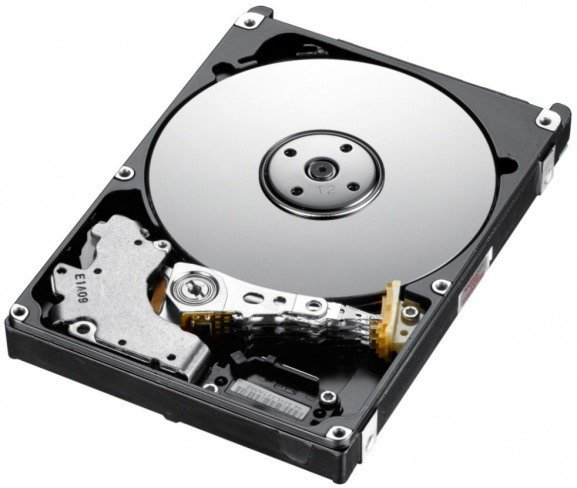

La Computadora y sus Partes
¿Qué es la Computadora?
Un computador es una máquina electrónica que está diseñada para realizar tareas específicas. En muchos países se le conoce como computadora u ordenador, pero todas estas palabras se refieren a lo mismo.
Con esta máquina se pueden desarrollar tareas que ahora hacen parte de nuestra vida cotidiana, como elaborar cartas o una hoja de vida, hablar con personas de otros países, hacer presupuestos, jugar y hasta navegar en internet.
Nuestro computador hace esto, procesando datos para convertirlos en información útil para nosotros.

La enorme cantidad de componentes de una computadora pueden agruparse en dos categorías separadas, que son: Harware y Softaware
- Harware:
El hardware de la computadora, en términos simples, son los componentes físicos que un sistema de la computadora necesita para funcionar.
- Software:
Es el conjunto de programas o aplicaciones, instrucciones y reglas informáticas que hacen posible el funcionamiento del equipo.
Harware
El hardware de la computadora, en términos simples, son los componentes físicos que un sistema de la computadora necesita para funcionar.
- Motherboar
La motherboard es central en cuanto al funcionamiento de la PC. Aloja la CPU y el centro que atraviesa el resto del hardware. La motherboard actúa como el cerebro. Distribuye la energía donde se necesita al comunicar con y coordinando con todos los demás componentes, convirtiéndola en una de las partes más importantes del hardware en una computadora.

Cuando elija una motherboard, es importante revisar los puertos de hardware que suministra la motherboard. Es vital revisar cuántos puertos de USB hay y de qué grado son (USB 2.0, 3.0, 3.1) como así también qué puertos de información se usan (HDMI, DVI, RGB) y cuántos de cada uno hay. Los puertos en la motherboard también los ayudarán a definir qué otro hardware será compatible con su computadora, como el tipo de RAM y la tarjeta gráfica que puede usar.
Aunque la motherboard es solo una parte del circuito, es la residencia para otra de las partes más importantes del hardware: el procesador.
- CPU(Unidad Central de Procesamiento)
La CPU(unidad central de procesamiento o procesador) es la responsable de procesar toda la información para los programas que ejecuta su computadora. La “velocidad reloj”, la velocidad en que el procesador procesa la información, se mide en gigahertz (GHz). Esto significa que una publicidad de procesador con una clasificación alta de GHz probablemente se ejecutará más rápido que un procesdor especificado de manera similar de la misma marca y año.

- Memoria RAM(Random Access Memory)
La memoria de acceso aleatorio, RAM, es un hardware que se encuentra en las ranuras de la memoria de la motherboard. El rol de la RAM es almacenar temporalmente la información sobre la marcha creada por los programas y para hacerlo de una manera que haga que estos datos sean inmediatamente accesibles. Las tareas que necesitan una memoria aleatoria pueden ser: representación de imágenes de diseño gráfico, video o fotografía editadas, multitarea con múltiples aplicaciones abiertas (por ejemplo, ejecutar un juego en una pantalla o mediante una discrepancia en la otra).

- Disco duro
La unidad de disco duro es el dispositivo de almacenamiento responsable de almacenar los datos permanentes y temporales. Estos datos vienen en muchas formas diferentes pero es, en definitiva, cualquier cosa guardada o instalada en una computadora, por ejemplo, los programas informáticos, las fotos familiares, el sistema operativo, los documentos de procesamiento de texto, etc.
Existen dos tipos diferentes de dispositivos de almacenamiento: la unidad de disco duro tradicional (HDD) y las unidades de estado sólido más nuevas (SSD). Las unidades de disco duro funcionan al escribir los datos binarios en los discos magnéticos giratorios denominados discos que giran a altas velocidades mientras que la unidad de estado sólido almacena los datos al usar chips de memoria flash estática.

- GPU (unidad de procesamiento gráfico)
La GPU es principalmente importante para la representación en 3D, hace exactamente lo que su nombre sugiere y procesa enormes lotes de datos gráficos. Encontrará que la tarjeta gráfica de su computadora tiene al menos una GPU. A diferencia de las capacidades de un gráfico incorporado básico que suministran las motherboards de PC, las tarjetas gráficas exclusivas se interconectan con la motherboard mediante una ranura de expansión para funcionar casi exclusivamente en la representación gráfica. Esto también significa que puede actualizar su tarjeta gráfica si quiere conseguir un poco más de desempeño de su PC.
No solo esto, sino las GPU modernas cumplen con una carga de trabajo más allá de solo la representación, convirtiéndola en una ampliación de la unidad central de procesamiento.

- unidad de alimentación (PSU)
Una unidad de alimentacion generalmente abreviado como PSU hace más que solo suministrar energía a su computadora. Es el punto donde ingresa su sistema desde una fuente de alimentación externa y está ubicada en la motherboard para el hardware de componentes individuales. No todos los suministros de alimentación son iguales y sin el voltaje correcto de PSU su sistema fallará.
Una computadora moderna generalmente necesitará una PSU que está calificada entre 500 W y 850 W para suministrar alimentación de forma eficiente a todo el hardware aunque el tamaño de la PSU dependerá completamente del consumo de energía del sistema. Las computadoras que se usan para tareas altamente intensivas como el diseño gráfico o el juego necesitarán más componentes poderosos y, por lo tanto, necesitarán una PSU más grande para encargarse de esta necesidad adicional.

- Tarjeta Madre
La tarjeta madre, es la placa principal en la estructura interna del computador donde se encuentran los circuitos electrónicos, el procesador, las memorias y las conexiones principales. Al referirse a la placa base, se habla de un tipo de tecnología que ha estado presente desde el inicio de la historia de las computadoras hasta la actualidad. En ella se conectan todos los componentes del computador teniendo como función principal controlar todos los elementos del servidor para brindarle un funcionamiento óptimo al usuario. De ella depende que dichos componentes estén bien comunicados unos de otros para garantizar el funcionamiento del sistema.
- Memoria Cache
La definición de memoria caché en informática nos dice que es uno de los recursos con los que cuenta una CPU (Unidad Central de Procesamiento) para almacenar temporalmente datos recientemente procesados en una memoria auxiliar. Se trata de lo que se conoce como una memoria estática de acceso aleatorio (SRAM) muy rápida y colocada cerca de la CPU.
- Memoria ROM
En informática, cuando hablamos de memoria ROM (acrónimo de Read–Only Memory, es decir, Memoria de Sólo Lectura), nos referimos a un tipo de almacenamiento empleado en computadores y otros dispositivos electrónicos, que se caracteriza por ser únicamente de acceso para lectura y nunca para escritura, es decir, que se la puede recuperar pero no modificar o intervenir.
La memoria ROM es de acceso secuencial y su presencia es independiente de la presencia de una fuente de energía. Como se ha dicho, su contenido no puede modificarse, o al menos no de manera simple y cotidiana, y suele contener información introducida en el sistema por el fabricante, de tipo básico, operativo o primario.

Software:
Es el conjunto de programas o aplicaciones, instrucciones y reglas informáticas que hacen posible el funcionamiento del equipo.
- Sistemas Operativos
Se le llama sistema operativo de software principal como también el conjunto de programas que tiene un sistema informático con la finalidad de manejar los recursos del hardware y permitir servicios a los programas que utilizan aplicación de software, estos funcionan de manera privilegiada comparándose con los demás.
Uno de los tantos objetivos principales que tiene el sistema operativo que se encarga de manejar y administrar el núcleo intermediario es gestionar los recursos que tiene la protección la localización para acceder al hardware. Esta capacidad tranquiliza a los programadores de aplicaciones el sistema se encarga de realizar estas funciones por sí solo.

- Aplicaciones Informaticas
Una aplicación informática es un tipo de programa informático que se crea como instrumento para permitirle al usuario hacer una o muchas tareas de diferentes tipos. Normalmente es la solución informática más eficaz a la hora de realizar diferentes tareas con alto nivel de complejidad, tales como la redacción de documentos, la gestión de almacenes o la contabilidad. Ejemplos de programas de aplicación pueden ser las hojas de cálculo, la base de datos y los procesadores de texto.
- Aplicaciones Informaticas
Este es el tipo de lenguaje formal que se crea para resolver procesos que pueden ser hechos por máquinas computarizadas. Se crean con la finalidad de que estos programas tengan el control del comportamiento lógico y físico de la máquina, a fin de que puedan manejar algoritmos con precisión, casi parecidos al modo de comunicarse de los humanos. Está compuesto por un convenio de reglas sintácticas, semántica y símbolos que expresa su significado y estructura en todas sus expresiones y elementos.

- Aplicaciones Informaticas
Un paquete de software es un conjunto de programas que son distribuidos complementariamente. Un motivo del porqué se distribuyen de esta manera es debido a que la implementación de uno requiere de la intervención del otro, aparte que ambos tienen objetivos que se relaciona estratégicamente en el área de la mercadotecnia.
Existen muchos sistemas operativos actualmente que incorporan y desincorporan paquetes evitando que se instalen programas en el dispositivo que impiden el funcionamiento de otros en el paquete.
El sistema de gestión de paquetes también se utiliza para dejar las dependencias de los paquetes: si uno de estos paquetes se recuesta en otro, el paquete instalar el primero.
- DriversTambién es llamado controlador o manejador de dispositivo y se define como el programa informático que posibilita al sistema operativo entrar en conectividad con algún periférico, creando una abstracción del hardware y permitiendo una interfaz que puede estar estandarizada a fin de utilizar el dispositivo. Es una herramienta clave del software si la cual el hardware no se pudiese utilizar.
Menu principal